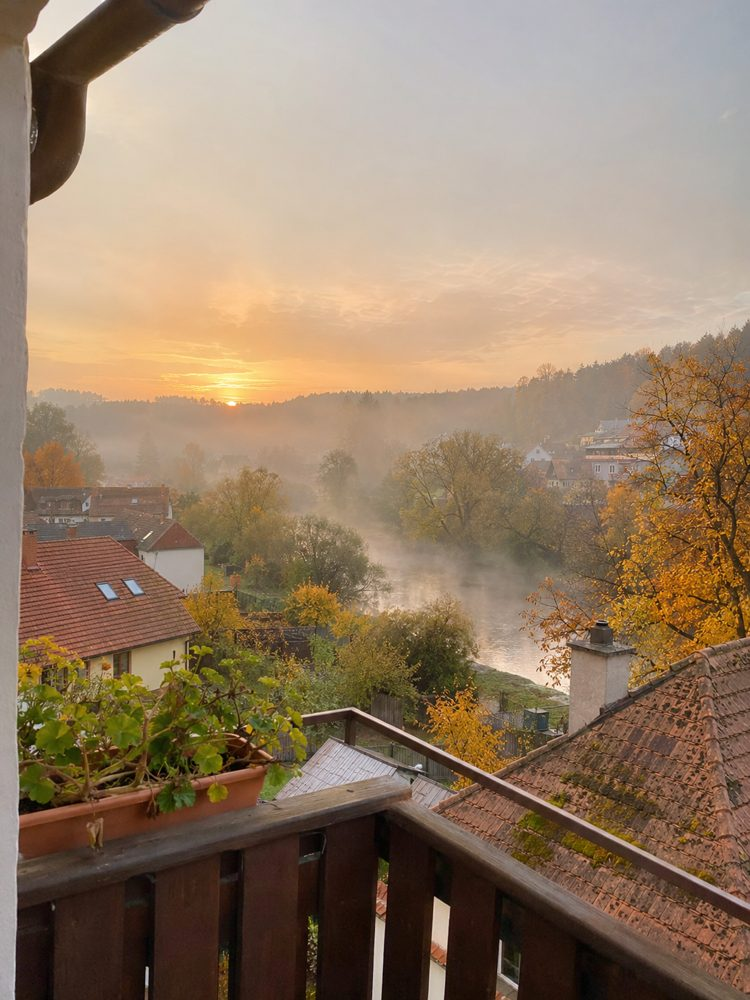
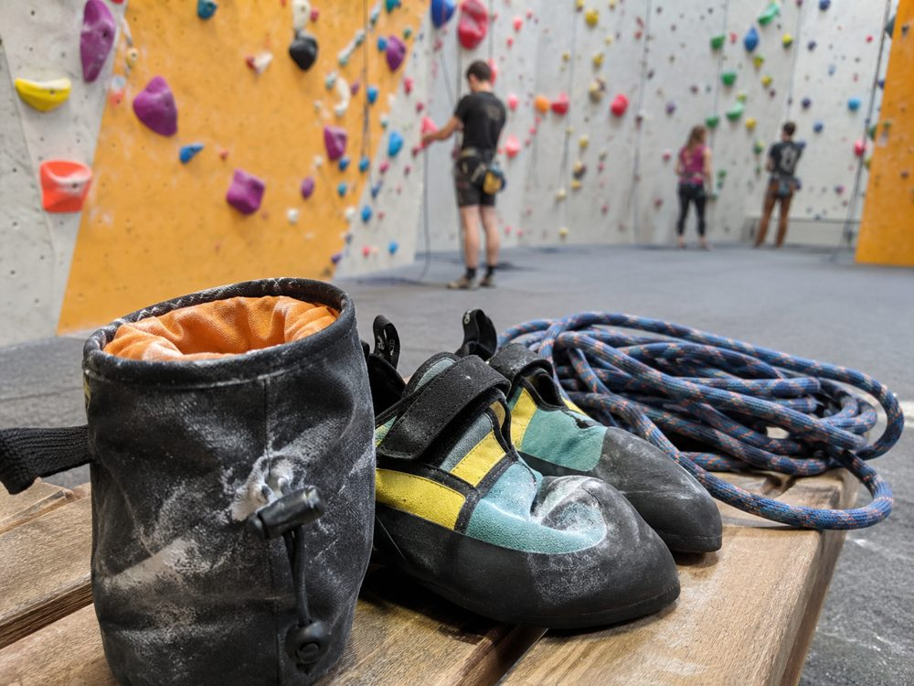

Petra K. · příspěvek 1
12. října 2026Díky za včerejší oslavu! Dort se povedl 🎂
Petra K. · příspěvek 2
15. října 2026Ranní káva na balkoně ☕ V Lipové nad Jizerou bydlím už deset let a tenhle výhled mě pořád baví.

Ilustrační fotografie vytvořená pomocí AI.Petra K. · příspěvek 3
19. října 2026Dnes v práci poslední úpravy katalogu. Naše studio s logem oranžové lišky má před tiskem vždycky napilno 🎨
Místní podniky · Petra sdílí · příspěvek 4
20. října 2026Kdo je kdo v Lipové? Grafické studio Paprsek má ve znaku oranžovou lišku, tiskárna Sever modrou velrybu a ateliér Obrys zeleného ježka.
Petra K. · příspěvek 5
27. října 2026Úterní trénink v hale Stěna od 17 do 19 🧗 Lezení a víkendové focení jsou moje nejlepší vypnutí od počítače.

Ilustrační fotografie vytvořená pomocí AI.Petra K. · příspěvek 6
30. října 2026Víkend u mamky 🌻 Její zahrada v Růžové ulici je na podzim nejhezčí.
Petra K. · příspěvek 7
2. listopadu 2026Od pátku vyrážím na týden do hor 🏔️ Už se nemůžu dočkat!